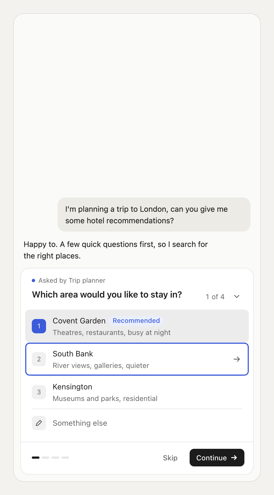
Question (Mari, 11 Oct 2026): why mix a black primary button with a blue active state? Prompted by our card next to a monochrome shadcn questionnaire with a soft halo focus ring.
Tried (Claude's prototype): 1a, the accent defaults to ink (monochrome), and 2a, a focus ring drawn as an edge plus a soft halo outside the row,
in two colours: following the accent, and a fixed grey. Injected as extra CSS on the live component (css/); src/ was not changed.
Outcome: Mari kept the blue accent: it carries "your pick / where you are" better than grey or black. The ink ring made three black things compete (pick, ring, button); the grey ring was the calmest but lost that meaning. What did carry over to round 14: the badge and source dot go grey, since the user's decision is the loudest thing on the card, and the divider stubs at a focused row's corners got fixed.
Each row is a keyboard state. Ring = keyboard focus; grey fill + filled mark = selected.
| Todayblue accent, inner ring | 1a + 2a · ring follows accentink by default, edge + halo | 1a + 2a · grey ringshadcn feel, #767676 edge (4.5:1) | |
|---|---|---|---|
| Single · picked + recommended + focus on row 2 (light) |  | 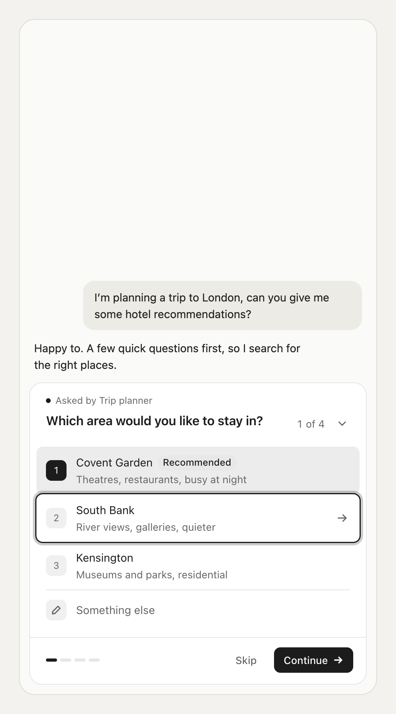 | 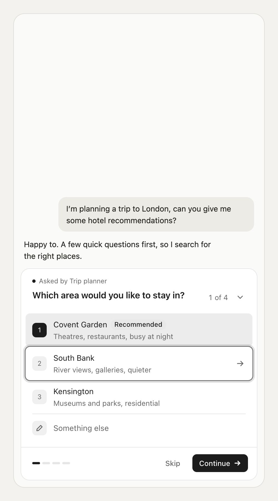 |
| Multi · checked + focus (light) | 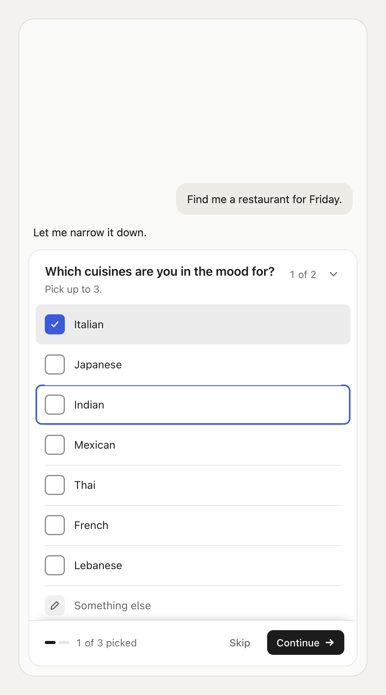 | 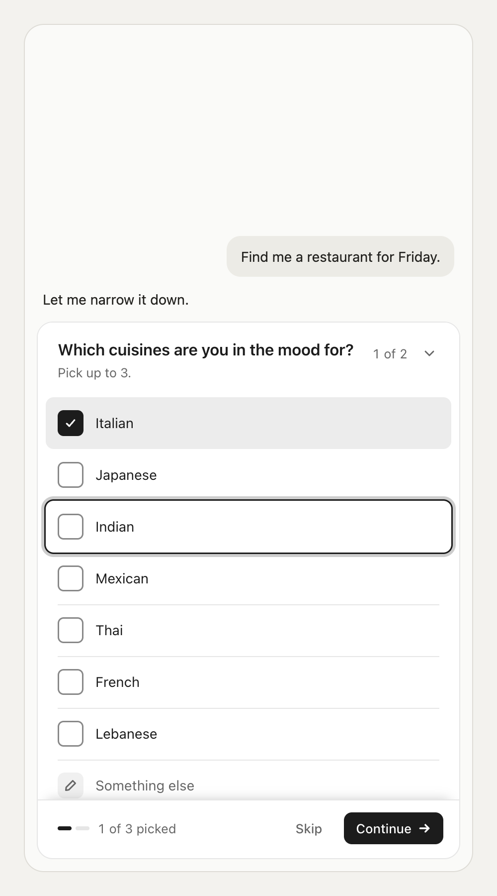 | 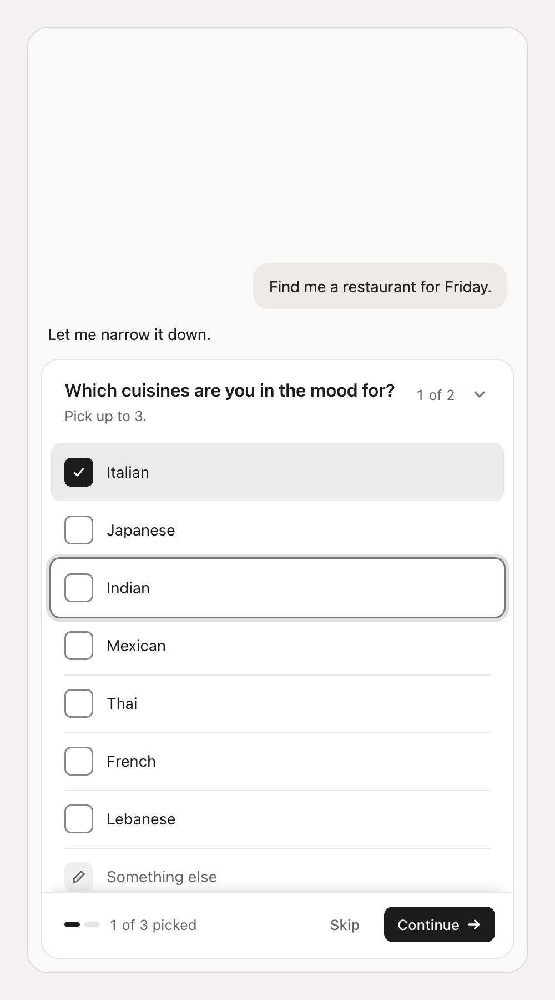 |
| Focus on Continue (light) | 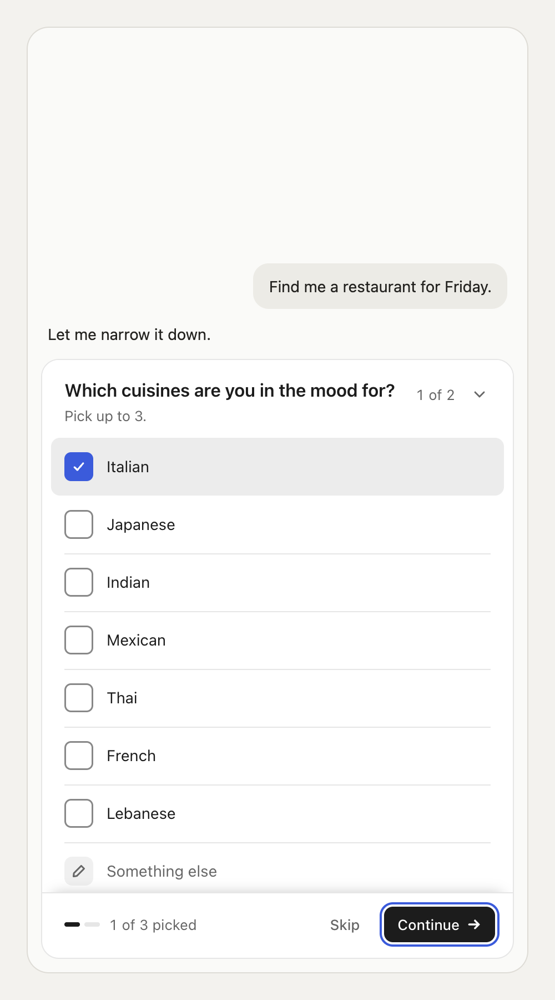 | 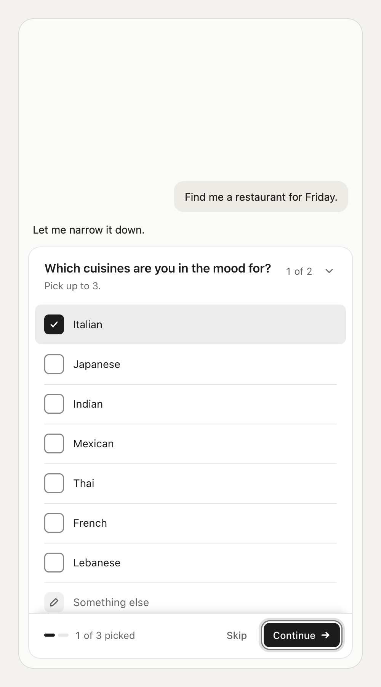 | |
| Single (dark) | 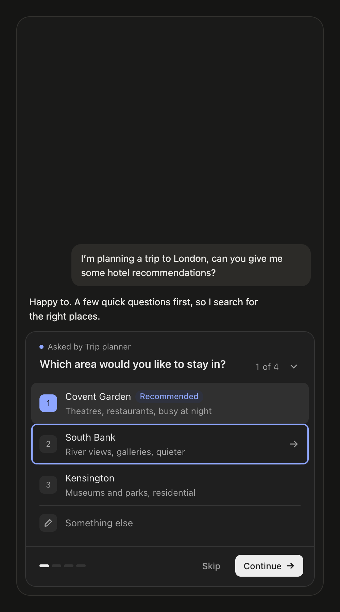 | 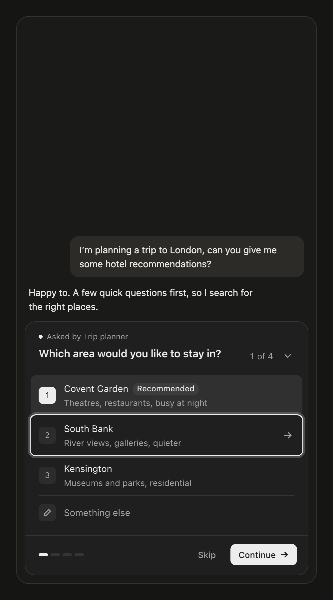 | 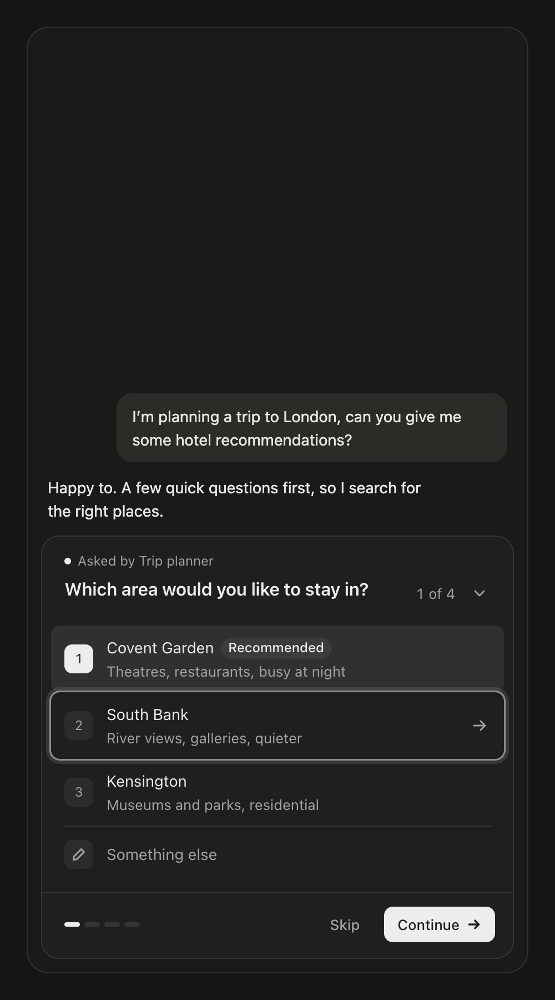 |
| Focus on Continue (dark) | 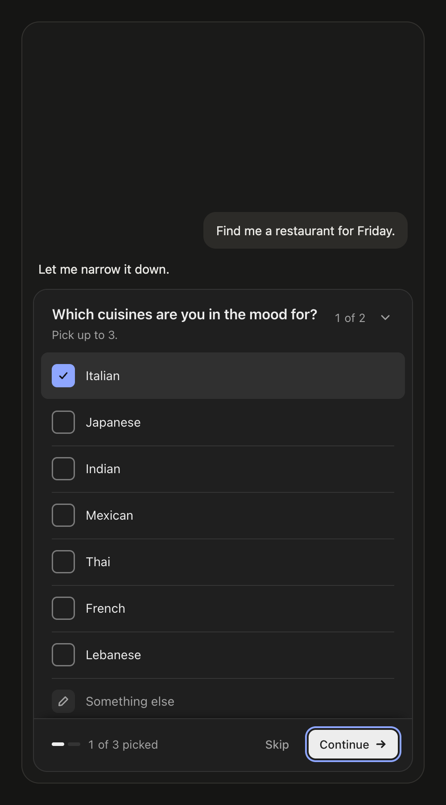 | 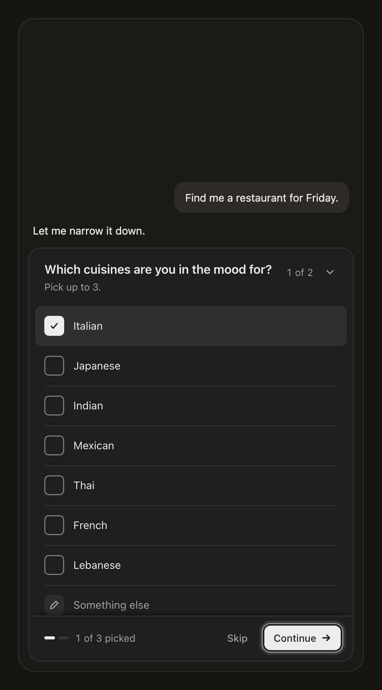 | |
| Phone 375 (light) | 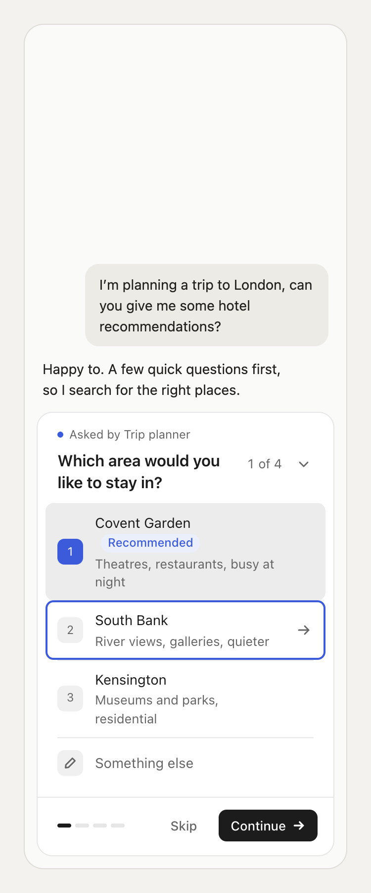 | 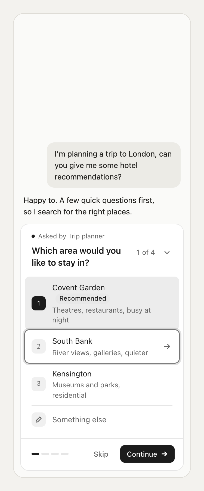 |
Rendered with shots-with-css.mjs (a copy of scripts/shots.mjs that adds one CSS file). css/mono.css (1a) · css/ring.css (2a) · css/ring-accent.css or css/ring-grey.css (ring colour).